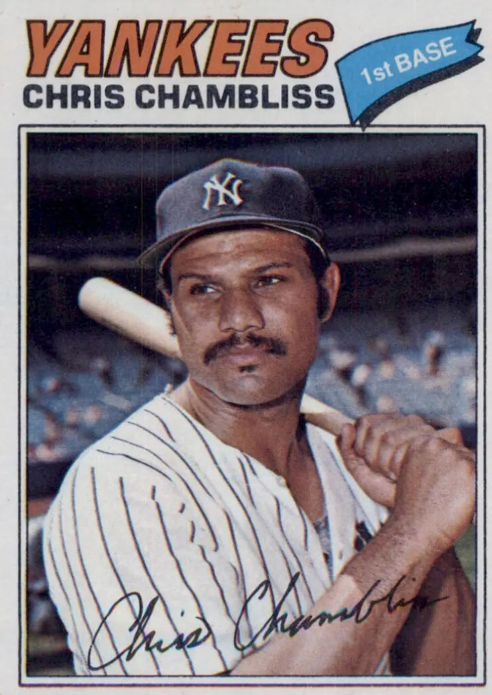

Chris Chambliss "Champ"
Career Highlights & Facts
(Facts are AI-generated and may require verification)
- Experienced major league player who enjoyed a career spanning over a decade in the big leagues.
- Featured primarily as a defensive presence at the player position.
- Wore the pinstripes in New York during his career as a valuable veteran contributor.
Player Biography
Chris Chambliss
January 4, 2012
/
in
BioProject - Person
Rookie of the Year
1970s All-Stars
/
by
admin
Joseph Wancho
On October 14, 1976, the Kansas City Royals and the New York Yankees were locked in
the winner-take-all fifth game
of the American League Championship Series at
Yankee Stadium
, going into the bottom of the ninth inning. The Royals had won Game Four the night before to force the deciding game. This evening, Royals third baseman
George Brett
had hit a three-run shot in the top of the eighth inning to tie the score at six, and the Royals seemed to be gaining momentum in their first-ever postseason series since joining the American League in 1969.
As the bottom of the ninth began, Yankee first baseman Chris Chambliss waited for Royals relief pitcher
Mark Littell
to finish his warm-up pitches, before stepping into the batter’s box. As Chambliss waited, Yankee public address announcer Bob Sheppard was cautioning the crowd of over 58,000 about throwing debris onto the playing field. The game had already been stopped several times for bottles, firecrackers, beer cans, and rolls of toilet paper being thrown from the stands. Behind Chambliss,
Sandy Alomar
settled into the on-deck circle, telling batboy Joe D’Ambrosio, “He’s gonna hit it out,” indicating Chambliss. “He’s got to hit one out, because if he doesn’t do it, I’m on deck.” Alomar, a steady defensive infielder, batted .239 that year.
“I was a little anxious,” Chambliss said, standing by the bat rack, annoyed by the delay. “It was cold, too. That was a trying little time there.” Littell was annoyed by the delay, too. With an 8-4 record, 16 saves, and a 2.08 ERA, the 23-year-old possessed a live fastball and a wicked slider. The delay prevented Littell from staying loose, and interfered with his rhythm.
Finally, at 11:13 PM, Chambliss stepped into the box, and home-plate umpire
Art Frantz
yelled “Play ball.” Chambliss was 10-for-20 with 7 RBIs in the playoffs. He narrowed his eyes. “I knew Littell was going to throw a fastball,” he said later.
Littell nodded at catcher
Buck Martinez
, and delivered a high inside fastball. Chambliss reared back, stepped into the pitch, and smashed it over the right field wall. Chambliss stood momentarily at home plate watching the flight of the ball carry through the autumn air, not sure if it would go.
“Sometimes you’ll see players drop their bats at home plate to admire the ball as it goes out of the park. They know they hit it so well, it’s a home run from the moment it leaves their bats. This wasn’t one of those. The ball I hit was more what you would call a towering drive with a lot of height, but I didn’t know if it had enough distance to make it out. When I hit the ball, it looked as if the Royals right fielder had a bead on it. He moved back as if he was going to catch it. But at the very last second, he backed into the wall and the ball cleared it.”
On the bench,
Thurman Munson
, in his catcher’s gear, leaped onto the field, tracking the ball into the bleachers. Chambliss then half-leaped to first base, unable to break into the home-run trot, as thousands of fans stormed the field, seemingly right at Chris.
As he rounded first base and headed to second, the base was ripped from its support by Yankee fans eager for some memorabilia. Chris ran by, touched the base with his right hand, and continued to run through the maze of humanity. Chambliss fell in the base path, accidentally knocking a body over, then he tagged third and headed home. “I gave him a pretty good forearm,” he said later, with a laugh. When fans tried to grab his helmet, Chambliss tucked it under his arm, like a football.
Like a fullback looking for a small hole at the line of scrimmage, Chambliss was spun completely around in a circle and powered his way through the throng. He was then escorted to the Yankee clubhouse by two policemen.
“Home plate was completely covered with people,” Chambliss said later. “I wasn’t sure if I tagged it or not. I came in the clubhouse and all the players were talking about whether I got it. I wasn’t sure, so I went back out.”
Graig Nettles
urged Chambliss to return to home plate to make it official. “I wanted to make sure there was no way we were going to lose it,” said Nettles.
Dressed in a police raincoat to avoid further harassment from the scores of fans still milling the field, Chambliss jogged out to home plate — found it had been dug up and removed, replaced by a hole — touched the hole before Frantz, and returned to the champagne party.
In a most historic and memorable fashion, Chris Chambliss delivered the first American League pennant to New York in the renovated Yankee Stadium, and the first one for the team since 1964, ending a 12-year drought. It was a dramatic victory for the Yankees, won by a player who prided himself on steady professionalism, not drama.
Carroll Christopher Chambliss was born December 26, 1948, in Dayton, Ohio. Chris was the third son of Reverend Carroll and Christine Chambliss. Reverend Chambliss was a Navy Chaplain, so his family was frequently on the move, relocating across the country. Chris lived in Xenia, Ohio, St. Louis, Chicago, and finally in Oceanside, California, where Chris attended high school, playing both shortstop and first base on the varsity baseball team. Chris and his three brothers, Randy, Frank, and Phil, all attended Mira Costa Junior College in Oceanside before moving on to other ventures. Chambliss had been drafted in 1967 and 1968 by Cincinnati, but declined both times and enrolled at UCLA. In his one season (1969) at UCLA, Chambliss hit 15 home runs with 45 runs batted in to pace the Bruin offense. In the summer of 1969, Chambliss played for the Anchorage Glacier Pilots, helping the team capture the National Baseball Congress Championship, which culminated with a 5-1 win over Liberal, Kansas. Chris hit .583 during the NBC Tournament and was named the Most Valuable Player.
In the January 1970 draft, the Cleveland Indians picked Chris with the first pick in the first round and assigned him to their affiliate in Wichita of the American Association, Cleveland’s top farm team. Chris earned Rookie of the Year honors while at Wichita, becoming the first freshman to win the batting title, posting a .342 average. Chris also hit seven home runs and collected 52 RBIs. Because of conflicting military reserve commitments, Chambliss was not called up to the big leagues at the end of the season.
During spring training in 1971, the Indians had to make a decision on Chambliss’ future. Veteran
Ken Harrelson
was the incumbent first baseman, though returning from an injury, and Chambliss suffered a leg injury that was thought to be a pulled right thigh muscle. So the Tribe sent Chris back to Wichita at the start of the 1971 season so that he could get accustomed to playing the outfield. The Cleveland front office believed that Chris would be able to contribute faster by learning a new position, and at the same time keeping both bats in the lineup.
Playing through the injury at Wichita, Chambliss was involved in a home plate collision and sent to Cleveland for rehab. It was soon learned that the muscle was ruptured, and Chambliss was put on a walking/jogging program. “I just want to play up here in the big leagues,” Chambliss said. “I don’t care what position. If I hadn’t hurt my leg, I think I would have made it up here sooner. I don’t feel uncomfortable any more in the outfield as I did last year, so I guess that’s progress.” Even so, Chris benefited from his manager in Wichita, veteran
Ken Aspromonte
. “The best thing that could have happened for me is what did,” acknowledged Chambliss. “I got to Wichita and Kenny let me play every day. That’s what I needed most.”
Chris overcame his injury was added to the Cleveland roster on May 17, making his debut on May 28 in Chicago. Pinch-hitting for shortstop and future fellow Yankee teammate
Fred Stanley
in the eighth inning, Chambliss grounded out. By this time, however, Harrelson was struggling with the Tribe, hitting .209 at the time of Chambliss’ debut. Hawk would only play three more weeks before calling it quits in favor of a short-lived professional golf career, turning first base over to Chris.
Chambliss never looked back, hitting safely in 14 of his next 15 games, smacking 114 hits in 111 games in 1971, including 20 doubles, nine home runs, 48 RBIs, and a .275 batting average. Nevertheless, the Tribe, under managers
Alvin Dark
and
Johnny Lipon
, finished in last place in the American League East, 43 games behind Baltimore. In a disastrous year, one bright spot was Chambliss, who was named American League Rookie of the Year by both the Baseball Writers’ Association of America and
The Sporting News
.
Ken Aspromonte took the helm of the Tribe in 1972, but Chambliss suffered a pulled hamstring in the second game of the season and was out a month while
Tom McCraw
replaced Chris at first base. After the All-Star break, Chris caught fire at the plate, hitting .314 with four home runs, 25 RBIs and 16 doubles in 67 games to finish with a .292 average for the season. His work in the field was also superb, with a .993 fielding percentage.
The Indians fared better in 1972 and behind
Cy Young
Award winner
Gaylord Perry
and a solid foundation of good, young talent, 1973 was shaping up to be quite a team. But third baseman Graig Nettles was dealt to the Yankees in the off-season, and catcher
Ray Fosse
was traded to Oakland during spring training. The Tribe slipped back to the division cellar while Chambliss endured another early season slump. But Chris turned it on and from June 6 to the end of the season and hit .316 to raise his average to .273. Chambliss also raised his home run total (11) and RBIs (53). From July 29 to August 18, Chambliss enjoyed a 19-game hitting streak, including a five-hit day at
Comiskey Park
on August 8.
In the fall of 1973, Chris married the former Audry Garvin, a model he met in Wichita. Audry wrote a column for the
Cleveland Plain Dealer
, providing insight into her life as a major league player’s wife.
On Friday, April 26, 1974, the Indians and Yankees completed a seven-player trade with pitchers
Dick Tidrow
,
Cecil Upshaw
, and Chambliss going to New York. In return, Cleveland received four pitchers;
Fritz Peterson
,
Tom Buskey
,
Steve Kline
and
Fred Beene
. Part of the motivation for the trade was the Yankee desire to unload Peterson, who had irritated Yankee management with another trade — swapping his wife with that of Yankee teammate
Mike Kekich
before the 1973 season.
Cleveland was happy to shore up their starting rotation with Peterson and Kline. The Tribe also believed that
John Ellis
could provide more steady power at first base than Chambliss. The New York media, however, denounced the trade, calling it “The Friday Night Massacre.” Yankee fans barraged the team with angry phone calls.
Yankee players offered similar reactions and were less then thrilled at giving up four pitchers. “I can’t believe this trade,” said Yankee center fielder
Bobby Murcer
. “It means they don’t think we have a winning ball club.” Murcer paid a stiff price for his honesty. He was traded at season’s end to San Francisco.
Other Yankees were equally bitter. “You just don’t trade four pitchers,” commented veteran ace
Mel Stottlemyre
. “You just don’t.” Yankee Captain Thurman Munson summed up his feelings very simply: “You’ve got to be kidding me.”
The Yankees played the home portion of their 1974 and 1975 schedules at
Shea Stadium
while Yankee Stadium was being renovated for the 1976 season. The fans at Shea hurled boos and jeers down on the new Yankees as they took the field for the first time on April 27, facing the Texas Rangers, managed by
Billy Martin
, who was ejected before the game began, for defending one of his coaches who had been ejected for heckling home plate umpire
Nick Bremigan
from the dugout. The Yankees responded to the jeers by yielding five runs in the first three innings, and falling to
David Clyde
, 6-1.
The Yankees finished the 1974 season in second place, two games behind Baltimore, staying in the race until the final series, fans cheering them on to the end. Manager
Bill Virdon
was named Major League Manager of the Year by
The Sporting News
. These results were quite different for Chambliss and Tidrow, who had been teammates since their minor league days at Wichita, and were used to the Indians’ losing ways and empty stands. Even though Chris did not hit as well in his new surroundings, his defense at first base was again nearly flawless.
Expectations ran high for the Yankees in 1975. Reigning Cy Young Award winner
Catfish Hunter
joined the Yankee staff as the first millionaire free agent, and All-Star outfielder
Bobby Bonds
came over from San Francisco in the Murcer deal. Hunter won 23 games for the Yankees, which would be the last in a string of five straight seasons of 20 wins for Catfish. Bonds proved less effective, battling injuries, but still posted a 30 home-run and 30 stolen-base season.
Chris hit .304 in 1975, as well as fielding at a .991 clip at first base, leading the league’s first basemen in games played (147) and innings (1,299.1), erasing fan doubts about his abilities. But after falling behind the Red Sox by 10 games, with a 53-51 record, Virdon was fired and replaced by Billy Martin. Martin had been fired by Texas and was replaced by
Frank Lucchesi
, just two weeks prior to signing on with the Yankees. Martin did no better, and New York finished in third place, 12 games behind Boston.
During the 1975 season, Audry gave birth to the couple’s only child, their son Russell. Russell Chambliss would spend some time in the Yankee farm system in the late 1990s.
The 1976 season would start a string of three straight American League pennants for the Yankees. Martin inserted Chris into the cleanup position in the batting order. Chambliss responded by having his finest year to date, clubbing 17 home runs and 32 doubles, driving in 96 runs, and hitting .293. Chambliss hit in 19 straight games from April 13 to May 11, ripping 35 hits in 83 at-bats and driving in 18 runs. He was selected to his only All-Star Game and was named to
The Sporting News
American League All Star Team at first base. In spite of hitting .524 in the ALCS and delivering the Yankees their first pennant in 12 years, the World Series ended Chris’s season with a loud thud. The Cincinnati Reds swept the physically and emotionally exhausted Yankees in four games, despite Martin’s promise to “get that Red Machine wheel by wheel, axle by axle, if we have to.”
Yankee president
Gabe Paul
and principal owner
George M. Steinbrenner III
were not satisfied with winning an American League pennant. They made major deals that would shape the team into a virtual All-Star team at every position. The Yankees signed free agent pitcher
Don Gullett
, who had just defeated them as a Cincinnati Red in the World Series. Shortstop
Bucky Dent
was acquired two days before the season started from the White Sox for outfielder
Oscar Gamble
.
The big free agent signing of the year was outfielder
Reggie Jackson
, whose ill-chosen words in a pre-season interview with a Sport magazine writer disparaging team captain and reigning MVP Thurman Munson infuriated the Yankees generally and Munson particularly. “Let me put it this way. No team I am on will ever be humiliated the way the Yankees were by the Reds in the World Series! Munson thinks he can be the straw that stirs the drink, but he can only stir it bad,” said Jackson. “I am the straw that stirs the drink. Maybe I should say me and Munson…, but really he doesn’t even enter into it.”
It was against Martin’s wishes that Yankee management signed Jackson. He preferred
Joe Rudi
, who was a right-handed batter, with good plate discipline and defensive instincts. Martin felt he had enough left-handed hitters with Nettles, Chambliss,
Mickey Rivers
, and
Roy White
was a switch-hitter. Martin was noticeably absent when Jackson was introduced to the media at a press conference.
In some ways, 1977 and 1978 mirrored themselves for the Yankees. For instance: each year they won the American League East with a slim margin, each year they had a Cy Young Award Winner (
Sparky Lyle
1977 and
Ron Guidry
1978), each year they bested the Royals in the League Championship Series, and toppled the Dodgers in the World Series both seasons, four games to two.
While Jackson was earning the nickname “Mr. October” for his heroics in the 1977 World Series, Martin observed that “I never wanted Reggie batting cleanup for me. I wanted Chris Chambliss. Reggie might be Mr. October, but Chambliss — that guy was Mr. Season.”
Yet through the incredible turmoil and strife that made the 1977 Yankee season distinctive and memorable, Chambliss was focused and steady. He batted .287, hit 17 home runs, and drove in 90 runs. He also maintained class. After the
Sport
magazine article appeared, Reggie Jackson, feeling insulted by his teammates, insulted them back by refusing to shake hands with them after smacking a home run. On May 29, in a game against the White Sox in Yankee Stadium, Chris Chambliss homered off
Ken Kravec
with Munson on first base and Jackson in the hole. After Chambliss crossed the plate and headed for the dugout, Jackson held out his hand to Chambliss, who slapped it, and kept his hand out for Munson, jogging behind. Munson ignored the offered hand. “All I know is that I can bat Chambliss anywhere in the order and he’ll drive in 100 runs,” Martin said.
Chambliss proved critical but forgotten in the World Series, too. In the second inning of the sixth game at Yankee Stadium,
Burt Hooton
was holding on to a 2-0 lead when he walked Reggie Jackson to lead off the frame. Chambliss then smashed a two-run homer to tie the game, the first of four home runs the Yankees would hammer in an 8-4 victory made most memorable by Jackson earning his stripes as “Mr. October” with three consecutive homers on three straight pitches.
The following season was rougher for the Yankees, though: the team suffered more dissension and injuries, with the Yankees falling to 14 games back of the Boston Red Sox. After denouncing Steinbrenner to the press, Martin resigned on July 24, 1978, completing his first of five tours of duty as the Yankee skipper.
Bob Lemon
took over the reins with the Yankees 10 games out of first place, with 63 to go. Under his calm, low-key, and firm leadership, the Yankees barreled back to tie the Red Sox for the division lead at season’s end.
The Yankees did have their troubles with certain teams in 1978. The Brewers had taken nine of 11 from New York heading into an August 9 contest at Yankee Stadium. The game looked like another win for Milwaukee, as the Brewers led 7-3, going into the bottom of the ninth.
Roy White led off the inning against
Bob McClure
by flying out to center. Then Dent singled and Rivers homered to cut the deficit to 7-5.
Willie Randolph
reached on an error by
Robin Yount
and Munson walked. Chambliss smacked a double to chase home Randolph. The Brewers intentionally walked Nettles, but Jackson was hit by a pitch in his arm to score Munson and tie the score. The next batter,
Lou Piniella
, bunted and the ball hit the plate and went a mile in the air. As Chambliss raced home with the winning run, Brewer catcher
Buck Martinez
tried to catch the ball and touch home plate at the same time, but he booted the attempt and Chambliss was safe at home, and the Yankees were victorious, by an 8-7 score.
New York caught Boston on September 10 and built their lead to three and a half games, but a Boston win and a New York loss on the final day of the regular season set up a one-game playoff at
Fenway Park
on October 2, 1978. With New York trailing 2-0 in the top of the seventh inning, Chambliss rallied the visitors with a single to left field. Roy White then singled to center field, and with two runners on base and two out, Bucky Dent hit his legendary three-run home run off
Mike Torrez
to the screen above the Green Monster in left field. The Yankees scored another run in the inning and went on to win 5-4 to capture the division.
Chris continued to be a steady hitter in 1978, batting .274, with 12 home runs, and 90 RBIs. Chambliss won the Gold Glove Award in 1978 with a league-leading fielding percentage of .997, committing only four errors in 1,481 chances.
During the 1978 World Series, Chris suffered a broken bone in his right hand, causing him to miss three games in the Series. In spring training, he had a cast placed on his right wrist due to a strained tendon. In spite of stories that the Yankees were pursuing
Rod Carew
to play first base, Chris had his usual productive year (27 doubles, 18 home runs, .280 batting average and a .994 fielding average). But for the Yankees, 1979 would be a year of not only disappointment on the field, but tragedy and loss off the field as well.
By June, Bob Lemon’s team had posted an indifferent 34-31 record, and the team was sitting in fourth place, eight games behind front-running Baltimore, battered by injuries to Jackson and ace reliever
Rich Gossage
. Lemon was axed and replaced by Billy Martin. Although New York would finish 55-40 under Martin, it would not be enough to catch Baltimore. For all intents and purposes, the Yankee season ended on August 2, when Thurman Munson died in a plane crash. As one Yankee beat writer wrote, the 1979 season was “bordered in black.”
The Yankees had the day off when Munson crashed his plane, and Chambliss and his wife Audry were in a car going to get some ice cream near their New Jersey home and heard the news on the radio. “Audry and I just looked at each other and didn’t say a word for I don’t know how long. We were just stunned…quiet…We were both so shocked,” Chambliss said.
During the offseason the Yankees were looking to find a capable catcher to replace Munson. On November 1, Chambliss was traded to Toronto along with infielder
Damaso Garcia
and pitcher
Paul Mirabella
. In return, New York received catcher
Rick Cerone
and pitcher
Tom Underwood
. But Toronto already had
John Mayberry
playing first base, so one month later, on December 6, Chris was dealt with infielder
Luis Gomez
to the Atlanta Braves. Atlanta sent reliever
Joey McLaughlin
and outfielder
Barry Bonnell
to the Blue Jays.
Chambliss was reunited with Braves manager
Bobby Cox
, who had been a Yankees coach in 1977. Chris soon learned how life was different with the then woeful Braves when he participated in the Braves’ one-van fan caravan from January 16-26. The Braves, who had only twice drawn more than 900,000 fans in the last six years, toured the Southeast on their 1980 press tour. The Yankees, who drew millions every year, never had to travel beyond New Jersey to attract a fan base. But for Chambliss,
Phil Niekro
,
Jerry Royster
,
Dale Murphy
,
Bob Horner
, and
Gary Matthews
, the hand-shaking and promoting stretched from Augusta, Georgia, to Gadsden, Alabama.
Cox was pleased that Atlanta obtained Chambliss. “We gave up quite a bit to get the left-handed hitter we wanted,” said Cox. “But we had to get a player and hitter of Chambliss’ quality.” Chambliss would bat fifth in Cox’s lineup sandwiched between Bob Horner and Dale Murphy.
Neither Chambliss nor the rest of the Atlanta team disappointed Cox, or the Brave fans. After a last-place finish in 1979, the Braves finished 1980 in fourth place and a game over the .500 mark. Chambliss again clubbed 18 home runs, while hitting .282 and led the league with 1,626 putouts.
Chris signed a five-year deal with the Braves during the off season in 1981, a season that would be darkened by a 50-day players’ strike. The result was a watered-down playoff format, and the Braves out of contention. Chambliss committed only four errors at first base and led the National League in assists with 94. Shortly after the resolution of the strike, Chambliss went on a 14-game hitting streak and hit .272 for the year.
The 1982 season would prove to be a breakout year for Atlanta as they captured the National League West Division crown under first-year skipper
Joe Torre
. Also,
Bob Watson
was obtained in a trade with the Yankees to platoon at first base with Chris against those “certain tough left-handed pitchers.”
The Braves topped the Dodgers by one game and the Giants by two games, to give the franchise only their second division title since moving to Atlanta in 1966. Chambliss smacked a career-high 20 home runs and drove in 86 runs for the season.
The Braves met the Cardinals in the League Championship Series. The first game of the series was played at Busch Stadium, and the Braves took a one-run lead on a double by
Claudell Washington
and a single by Chambliss. However, the weather gods were not on the Braves side on this day. With the Braves leading 1-0, the game was called in the bottom of the fifth inning because of rain. In the history of Major League Baseball, 29 World Series games and 13 other playoff games have been postponed. The first game of the 1982 NLCS was the only time a playoff game was postponed after play had begun. The postponed game broke a string of 257 playing dates at Busch Stadium without a postponement, dating back to June 23, 1979.
The Cardinals went on to sweep the Braves in three games, ending a wonderful season for the Braves. The trio of Horner, Chambliss, and Murphy went 4 for 32 in the series, while St. Louis outscored Atlanta 17-5 for the three games.
The Braves finished in second place, three games behind the Dodgers in the 1983 campaign. Chambliss equaled his home run output from the previous year with 20 and hit .280. In a July stretch, Chambliss hit in 18 of 19 games and had raised his average to .305. For the first time in his 13-year career, Chambliss was put on the disabled list on August 9 with a strained muscle in the rib cage area.
Over the next three years, Chris’ production and playing time decreased.
Gerald Perry
was a star in the Braves’ minor league system and replaced Chambliss the last month of the 1984 season, a season that saw Chris manage to hit only nine home runs after back-to-back 20-homer years.
“I can do everything I’ve been able to do throughout my career, even better,” said Chambliss in 1985 at spring training. “I’d really like the opportunity to play regularly. That’s the way I can be effective.” But
Eddie Haas
was the new Brave skipper, and management favored the youngster Perry, seen as a “can’t-miss” prospect. But Perry missed spectacularly, hitting .214 with three homers and 13 RBIs. Chambliss did little better at .235, three home runs and 21 RBIs. Bob Horner took over at first base, with a .267 average, 27 HRs, and 89 RBIs, but the Braves finished fifth with a 66-96 record.
Eddie Haas was replaced in late August by coach
Bobby Wine
. Bob Horner was now getting the most at-bats (483) while playing first base. Chambliss had only 170. In 1986, Chambliss played in 20 games at first base, but led the league with 20 pinch-hits.
In his book on the Yankees’ 1978 season,
The Bronx Zoo
, Sparky Lyle sums up why Chambliss was such a successful major league baseball player. “Chambliss is a hell of a hitter. He isn’t the type of hitter who swings from his ass all the time to try to hit the ball out of the park,” wrote Lyle. “He takes his time and swings at good pitches. He’s the only guy who rarely gets in a slump.”
Lyle also spoke of Chambliss’ character. “Chris is one of the nicest guys on the club, never says a bad word about anybody, never gets mad, and never makes the excuses for himself if he makes an error,” Lyle continued. “Chris is a very nice guy, an intelligent person and he’s considerate of others, which isn’t a quality you find in a lot of ballplayers.”
Chambliss retired with a batting average of .279 and 185 home runs. He is among the career leaders for first baseman in games played (1,962), assists (1,351), putouts (17,771), double plays (1,687) and fielding percentage (.993).
In 1987, Chris returned to the Bronx when he was hired by the Yankees to be their organizational hitting coach. But that was only the first step for Chris on a long and successful coaching career.
On May, 7, 1988, the Yankees placed first baseman
Jose Cruz
on the disabled with a sore left knee and activated their hitting coach, 39-year old Chris Chambliss. Chambliss was stunned when manager Billy Martin informed him that he was being activated. Chris’ last official at-bat came in Arlington, Texas, against the Rangers on May 8 in a pinch-hitting role. Batting for shortstop
Rafael Santana
against
Dale Mohorcic
, Chambliss was called out on strikes. He was de-activated two days later.
Chambliss spent the next 20 years coaching in the majors and managing in the minors. He was named Minor League Manager of the Year by
The Sporting News
in 1991 when he guided the Greenville Braves of the Southern League to an 88-56 record. Chris was also the hitting coach when the Yankees won the World Championship in 1996, 1998, 1999, and 2000, and was credited by players and media for developing the Yankees’ famed patience at the plate, getting long at-bats to wear down pitchers and see the desired pitch to hit. Chris also had stops as hitting coach with the Reds, Cardinals, Mets and Mariners. But the job of managing a big-league club has eluded his grasp.
Veteran sportswriter Maury Allen wrote that Chambliss wasn’t a very popular player when he first joined the Yankees in 1974, but he “just went out and did his job every day as a left-handed slugger and comfortable fielder. He was always a class act, a man of dedication and integrity, someone who seemed unmoved in his performance by all the noise and turmoil around Yankee Stadium.”
In 2008, Chris and Audry resided in Alpharetta, Georgia. Audry worked a few years as a lounge singer in New York, and son Russell played in the Yankee farm system before quitting to become a teacher. Chris was the hitting instructor of the Richmond Braves, Atlanta’s AAA affiliate of the International League. “I’m happy to be back with the Braves organization,” said Chambliss. “This is where I live now and it was the best job available to me.”
He also has two of the most memorable souvenirs of his baseball career: the bat and ball from his 1976 pennant-winning home run. “I still have the bat and the ball in my home,” he says. “Some Stadium cop recovered (the ball) for me and brought it in after the game. I should have had him sign it to authorize it, but I never did. I guess people will just have to believe me.
“You know, the thing about that hit is that every time I see it again on television, I see something I didn’t remember happening,” he says of his legendary home run.
Last revised: January 4, 2012
Author’s note
There is some discrepancy concerning the spelling of Mrs. Chambliss’ name. Most sources spell it “Audrey,” but the 2008 Richmond Braves Media Guide spells it “Audry.” I have elected to use “Audry” in this article because it is the most current.
Sources
Cleveland Plain Dealer
Cleveland Press
New York Times
The Sporting News
The Daily Sentinel
, Sitka, Alaska, August 26, 1999.
Maury Allen,
Where Have Our Yankees Gone?
Sports Publishing, 2004, pages 80-82.
Dick Lally,
Bombers
, Three Rivers Press, 2002, page 207.
Philip Bashe,
Dog Days
, Random House, 1994, pages 352-354.
Sparky Lyle with Peter Golenbock,
The Bronx Zoo
. Triumph Books, 1979, 2005. Pages 80-81, 191-192.
Steve Jacobson,
The Best Team Money Could Buy
, New American Library, 1978. Pages 127-128.
Roger Kahn,
October Men
. Harcourt Inc., 2004. Pages 134-136.
Bob Tiemann, “The Game That Wasn’t,”
Mound City Memories
, University of Nebraska Press, 2007. Pages 45-46.
Glenn Stout and Richard A. Johnson,
Yankee Century
. Houghton Mifflin Company, 2002. Pages 336-337, 360-363.
http://www.retrosheet.org/
http://www.thebaseballcube.com/
http://minors.sabrwebs.com/cgi-bin/milb.php
http://atlanta.braves.mlb.com/index.jsp?c_id=atl
Photo Credits
The Topps Company and ESPN
Full Name
Carroll Christopher Chambliss
Born
December 26, 1948 at Dayton, OH (USA)
Stats
Baseball Reference
Retrosheet
Tags
Rookie of the Year
·
1970s All-Stars
·
Career Totals
| WAR | AB | H | HR | BA | R | RBI | SB | OBP | SLG | OPS | OPS+ |
|---|---|---|---|---|---|---|---|---|---|---|---|
| 27.5 | 7571 | 2109 | 185 | .279 | 912 | 972 | 40 | .334 | .415 | .749 | 109 |
Statistics via Baseball-Reference.com
The Original Clue